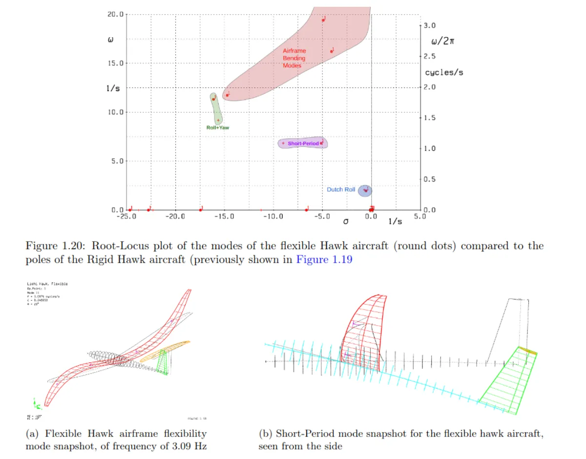
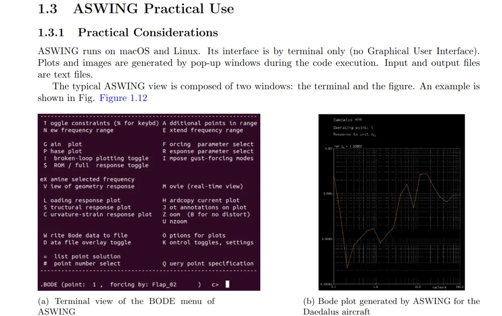
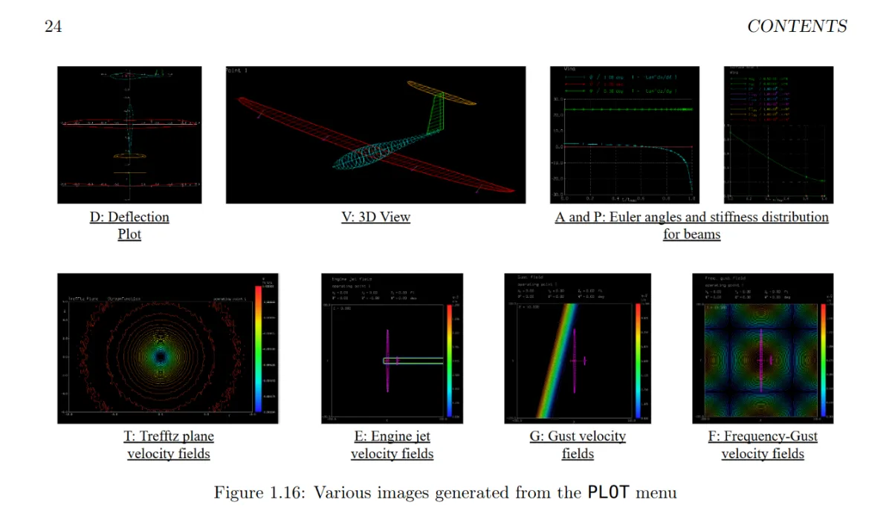

ASWING Extended
User Manual
An extended guide to ASWING software, now featured on the official MIT ASWING website.

Cover page of the Extended User Manual — a practical companion to the official ASWING documentation.
Context: Why ASWING?
My PhD focuses on the dynamics and control of flexible aircraft. That requires a low-order aerodynamic tool capable of quickly computing performance for airframes where structural flexibility matters — not just rigid-body dynamics. For rigid aircraft the options are plentiful: AVL, OpenVSP, XFLR5, Flow5, and others. Once airframe flexibility enters the picture, the list shrinks considerably.
ASWING, developed by Mark Drela at MIT, is one of the few tools that fills this gap. It couples a nonlinear unsteady lifting-line model with an extended Euler–Bernoulli beam formulation, making it well suited for aeroelastic trim, time-domain transient simulation, and frequency-domain analysis — including eigenvalue problems and Bode plots from control surface forcing. It is, in short, a remarkably capable piece of software for early-stage flexible aircraft analysis.
The catch: it has no GUI, and its usage is far from obvious. Its interface is text-command-driven and resembles AVL closely — unsurprisingly, both are authored by Mark Drela. For anyone coming from more modern tools, the learning curve is steep and the documentation, while accurate, needed to be extended.
What the Manual Covers
To make ASWING more accessible — both for myself and for others — I wrote a comprehensive extended user manual with annotated screenshots of every major menu, workflow, and output format the software offers. The manual walks through:
- Software installation and environment setup on Linux/Ubuntu
- Aircraft geometry definition — how to structure an ASWING input file, define beam properties, aerodynamic sections, and control surfaces
- Trim calculations — steady-state point analysis and how to interpret the outputs
- Time-domain simulation — setting up and running transient flight dynamics cases, including gust responses
- Frequency-domain analysis — eigenvalue extraction, mode identification, and Bode plot generation from control surface inputs
- Output interpretation — navigating ASWING's various result displays and extracting useful data

Example page from the manual — annotated walkthrough of a trim calculation workflow in ASWING.

Example page from the manual — time-domain simulation setup and output navigation.
Featured on the Official ASWING Website
Following its completion, the manual was shared with Mark Drela and subsequently featured on the official MIT ASWING website as a supplementary resource for users. It is, to my knowledge, the most complete practical guide to the software currently available publicly.
In addition to the manual itself, a public GitHub repository collects various ASWING studies and utilities I have developed over the course of my PhD — available at github.com/LeonardoAVONI/91_ASWING_Public.
Documentation
The manual is freely available for download below.